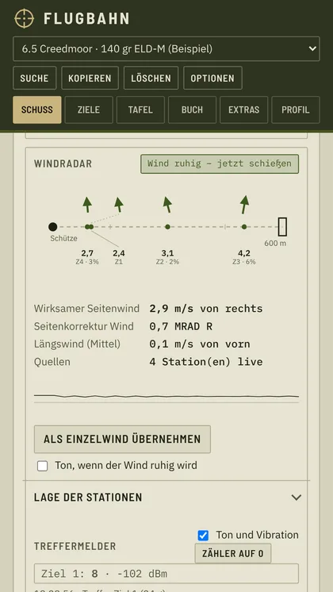
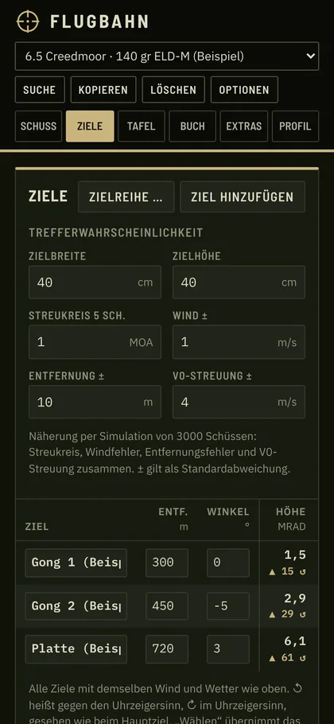
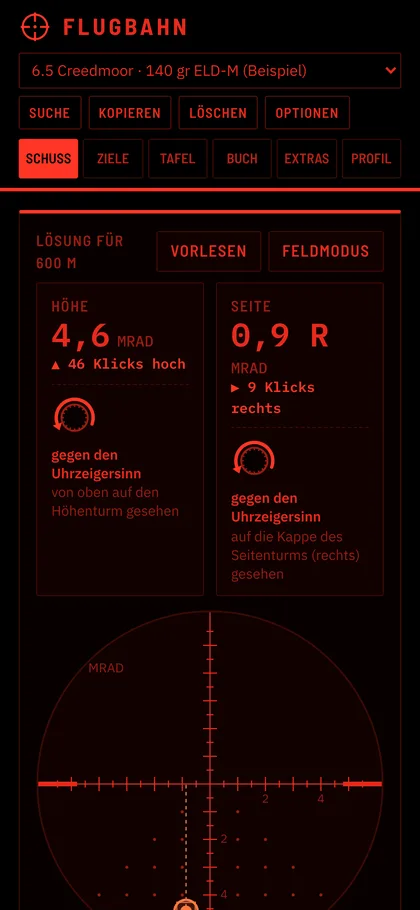
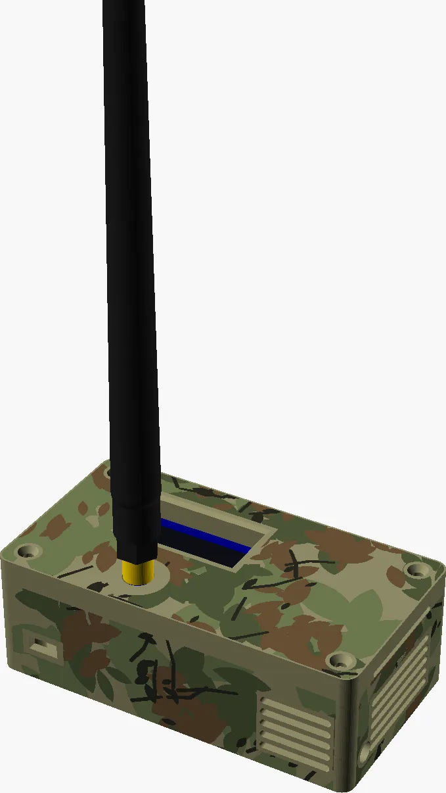
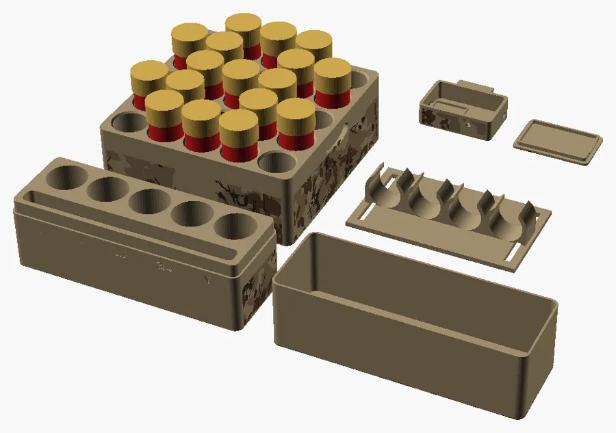
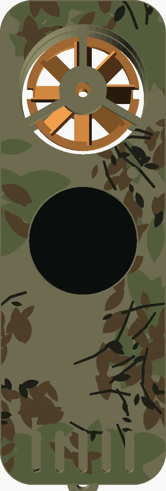
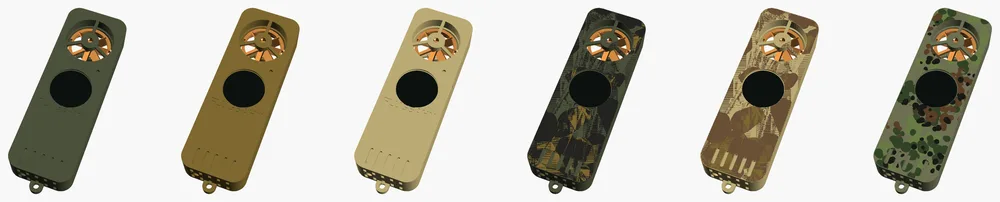
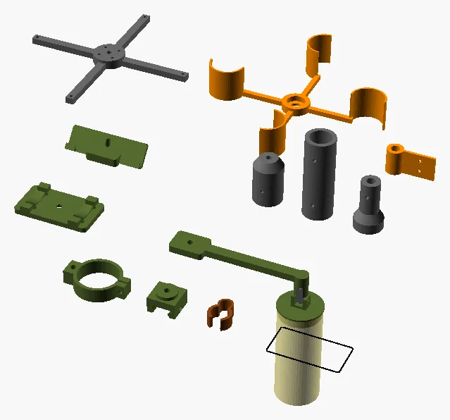
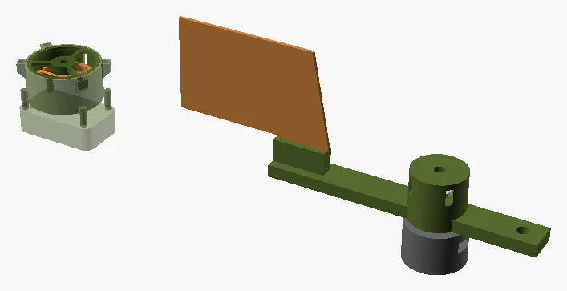
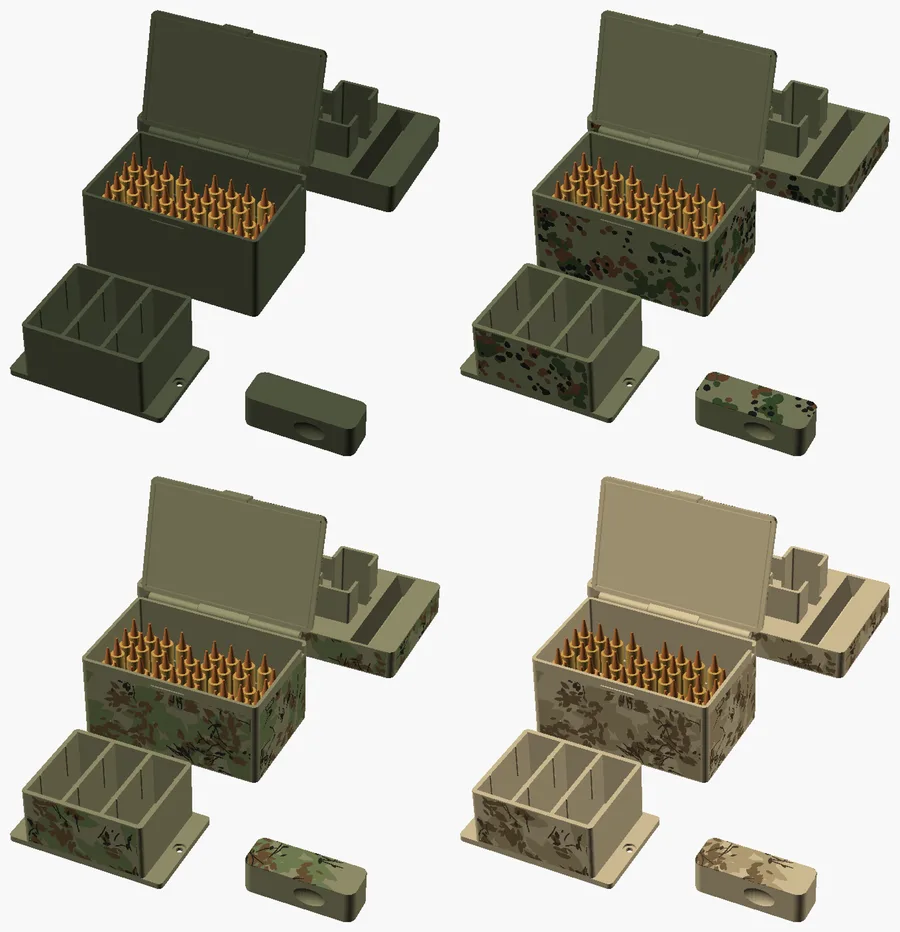

Die AppThe app
Für Sportschützen, Jäger und PRS. Alle Daten bleiben auf deinem Handy, es gibt kein Konto.
For target shooters, hunters and PRS. All data stays on your phone, no account needed.



FeuerleitlösungFiring solution
- Höhe und Seite in MRAD oder MOA, mit Klicks
- Drehrichtung für über 270 Zielfernrohre
- 46 Herstellerabsehen mit echten Teilungen
- Warnung, wenn der Verstellbereich endet
- 18 Zielfernrohre aus dem 2. Weltkrieg mit Entfernungstrommel
- Elevation and windage in MRAD or MOA, with clicks
- Turret direction for 270+ riflescopes
- 46 manufacturer reticles with real subtensions
- Warning when elevation travel runs out
- 18 WWII riflescopes with range drum
PhysikPhysics
- G1/G7, BC-Staffeln oder eigene Widerstandskurve
- Wetter per Standort, Kestrel-Import
- Drall, Coriolis, Pulvertemperatur
- Kurve aus deinen Treffern abgleichen
- G1/G7, banded BCs or your own drag curve
- Weather by location, Kestrel import
- Spin drift, Coriolis, powder temperature
- True the curve from your hits
DatenData
- Über 1.700 Geschosse von Herstellerangaben
- Über 2.600 Fabrikladungen in über 190 Kalibern
- Profile per QR-Code teilen
- Schussbuch, Streckenbuch, Schusstafel
- 1,700+ bullets from manufacturer data
- 2,600+ factory loads in 190+ calibers
- Share profiles by QR code
- Shot log, harvest log, range card
KI auf dem GerätOn-device AI
- Trefferbild per Foto auswerten
- Fahnenwinkel live per Kamera
- Sprachsteuerung und Sprachausgabe
- Windprognose und Windlese-Trainer
- Score your group from a photo
- Live flag angle by camera
- Voice control and spoken corrections
- Wind forecast and wind reading trainer
FlinteShotgun
- Energie je Schrotkorn und Garbe nach Würgebohrung
- Sinnvolle Höchstentfernung je Wildart
- Vorhalt und Gefahrenbereich
- Flintenlaufgeschosse, Garbe per Foto zählen
- Energy per pellet and pattern by choke
- Ethical maximum range per game
- Lead and danger zone
- Slugs, count the pattern from a photo
MessgeräteDevices
Eigene Hardware, verbunden per Bluetooth und Funk (LoRa). Jedes Gerät gibt es in vielen Tarnmustern.
Your own hardware, connected by Bluetooth and radio (LoRa). Every device comes in many camo patterns.

Funkstation und WindradarRadio station and wind radar
Bis zu sechs Stationen entlang der Bahn melden Wind und Richtung per Funk an die Brücke am Schützen. Die App zeigt den wirksamen Seitenwind über die ganze Strecke und gibt ein Signal, wenn der Wind ruhig ist.
Up to six stations along the range report wind speed and direction by radio to the bridge next to the shooter. The app shows the effective crosswind over the whole distance and beeps when the wind settles.
- Reichweite bis 1200 m mit Paketverlust-Anzeige
- Akku und Solar, Stativ oder Sandsack
- Treffermelder für Stahlziele
- Range up to 1200 m with packet-loss display
- Battery and solar, tripod or sandbag
- Hit detector for steel targets

Funkfühler und Flinten-ZubehörWireless sensor and shotgun accessories
Der Funkfühler hängt an der Patronenbox und meldet die Munitionstemperatur alle 5 s per Bluetooth ans Handy, mit eigenem Akku und USB-C. Dazu zum Drucken: Schrotpatronen-Halter für 25 Patronen, Gürtel-Clip und Choke-Etui mit Beschriftung.
The wireless sensor hangs on the ammo box and sends the ammo temperature to the phone by Bluetooth every 5 s, with its own battery and USB-C. Also to print: a 25-round shotshell holder, a belt clip and a labelled choke case.

HandgerätHandheld
Rundes Touch-Display, Flügelrad, Temperatur, Luftdruck, Feuchte und Kompass. Es schickt die Werte direkt in die App, auch die Munitionstemperatur.
Round touch display, vane anemometer, temperature, pressure, humidity and compass. It sends readings straight to the app, including ammo temperature.

Farben und Muster: Oliv, RAL 8000, Sand, Flecktarn, Concamo, Rhodesian Brushstroke, Wüstentarn, Schwarz-Rot-Gold und mehr.
Colours and patterns: olive, RAL 8000, sand, Flecktarn, Concamo, Rhodesian brushstroke, desert camo, black-red-gold and more.
So kommen die Daten ins HandyHow the data gets to your phone
Alles läuft direkt zwischen deinen Geräten. Kein Internet, keine Cloud, kein Konto.
Everything runs directly between your devices. No internet, no cloud, no account.
1 · Bluetooth zum Handy1 · Bluetooth to the phone
Handgerät, Funkbrücke und Funkfühler sprechen Bluetooth Low Energy direkt mit dem Handy, Reichweite etwa 10–30 m. In der App tippst du auf „Messgerät verbinden“, Android zeigt die gefundenen Flugbahn-Geräte, du wählst eins aus. Koppeln in den Android-Einstellungen ist nicht nötig.
The handheld, radio bridge and wireless sensor talk Bluetooth Low Energy directly to the phone, range about 10–30 m. In the app tap “Connect device”, Android lists the Flugbahn devices it finds, pick one. No pairing in the Android settings needed.
2 · Was übertragen wird2 · What is sent
Jedes Gerät schickt seine Messwerte als kurze Textzeile, das Handgerät jede Sekunde, der Funkfühler alle 5 s, zum Beispiel {"t":14.2,"p":987.4,"wa":3.1,"at":21.4} (Luft, Druck, Wind, Munition). Die App zeigt sie an und übernimmt sie in die Rechnung, je nachdem, welche Haken du gesetzt hast. Neu gerechnet wird höchstens alle 2 s.
Each device sends its readings as a short line of text, the handheld every second, the wireless sensor every 5 s, for example {"t":14.2,"p":987.4,"wa":3.1,"at":21.4} (air, pressure, wind, ammo). The app shows them and uses them in the calculation according to your ticks. It recalculates at most every 2 s.
3 · LoRa-Funk über die Strecke3 · LoRa radio down the range
Bluetooth reicht keine 1200 m. Die Stationen an der Bahn funken deshalb mit LoRa auf 868 MHz (in der EU anmeldefrei) alle 2 s ein 16-Byte-Paket an die Brücke am Schützen. Die Brücke sammelt bis zu 6 Windzonen und 8 Treffermelder und gibt alles in einer Meldung per Bluetooth ans Handy weiter. Fehlende Pakete zeigt die App als Paketverlust in Prozent.
Bluetooth does not reach 1200 m. The stations along the range therefore send a 16-byte packet every 2 s via LoRa on 868 MHz (licence-free in the EU) to the bridge at the shooter. The bridge collects up to 6 wind zones and 8 hit detectors and passes everything to the phone in one Bluetooth message. Missing packets show up as packet loss in percent.
4 · Und zurück4 · And back
Die App schickt die fertige Feuerleitlösung (Höhe, Seite, Klicks, Drehrichtung) zurück ans Handgerät. So steht sie auch auf dessen rundem Display, wenn das Handy in der Tasche bleibt.
The app sends the finished firing solution (elevation, windage, clicks, turret direction) back to the handheld, so it also shows on its round display while the phone stays in your pocket.
Munitionsfühler: entweder am Kabel ins Handgerät gesteckt (die Temperatur geht dann mit den Handgerät-Daten ins Handy) oder als Funkfühler mit eigenem Akku, der sich selbst per Bluetooth mit dem Handy verbindet (Schuss → Korrekturen → „Fühler verbinden“).
Ammo sensor: either wired into the handheld (the temperature then travels with the handheld's data) or as a wireless sensor with its own battery that connects to the phone by Bluetooth itself (Shot → Corrections → “Connect sensor”).
Selbst bauenBuild it yourself
Die Bauanleitung ist kostenlos. Du brauchst einen 3D-Drucker, einen Lötkolben und etwa einen Nachmittag pro Gerät.
The build guide is free (German). You need a 3D printer, a soldering iron and about an afternoon per device.



BausätzeKits
| SetKit | InhaltContents |
|---|---|
| HandgerätHandheld | Gehäuse in Wunschfarbe, Elektronik, AkkuHousing in your colour, electronics, battery |
| Set „1 Zone““1 zone” kit | Funkbrücke und eine FunkstationRadio bridge and one station |
| Set „Komplett““Complete” kit | Handgerät, Brücke und zwei StationenHandheld, bridge and two stations |
Bausätze sind in Vorbereitung. Preise und Bestellung folgen. Interesse? Schreib eine E-Mail an die Adresse im Impressum.
Kits are in preparation. Prices and ordering will follow. Interested? Send an email to the address in the legal notice.
Hinweis: Flugbahn liefert Rechenwerte. Überprüfe die Ergebnisse am Schießstand und gleiche die V0 an deine Waffe an. Beachte die Vorschriften deines Landes zu Waffen, Jagd und Funk.
Note: Flugbahn provides calculated values. Verify results at the range and true the muzzle velocity for your rifle. Follow your country's rules on firearms, hunting and radio.